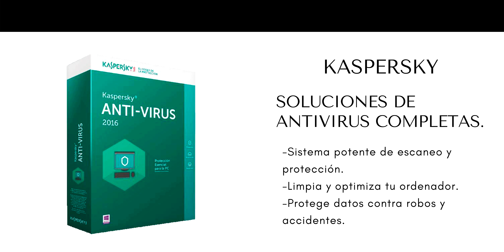
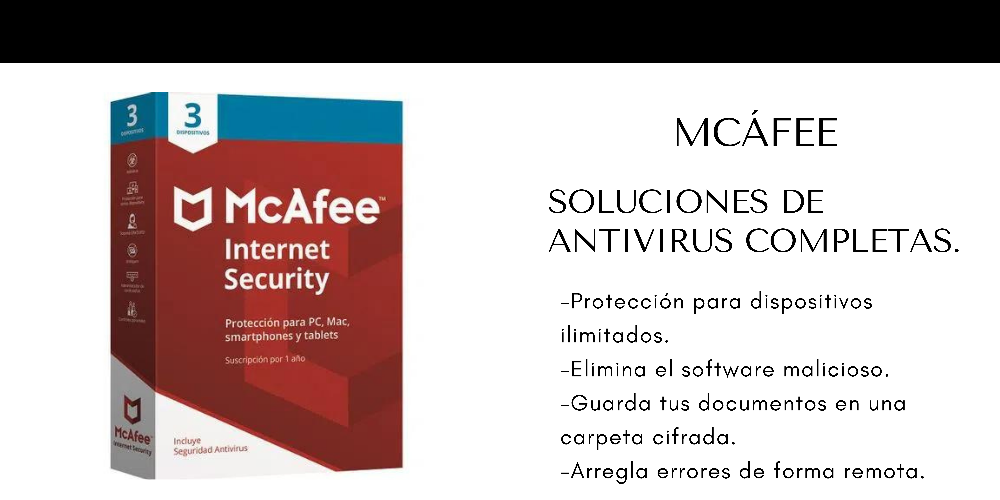
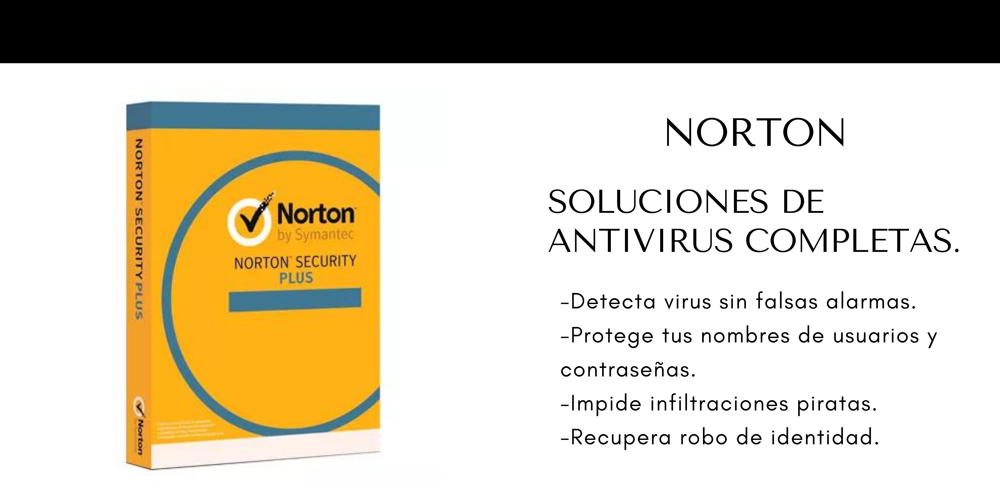
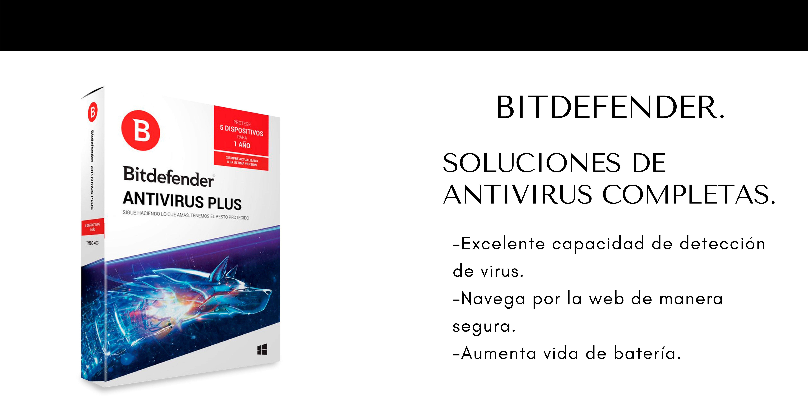

Siempre debemos tener en cuenta la importancia de mantener la seguridad en nuestros dispositivos. Vamos a explicar cómo podemos saber si nuestro ordenador tiene virus:
-Mal funcionamiento y lentitud.
-No responde a las órdenes dadas. Por ejemplo que intentemos abrir un programa y no se abra, que eliminemos un archivo y no se borre, que abramos la configuración y automáticamente se cierre, etc.
-Aparecen programas que no hemos instalado.
-Mala velocidad de Internet o cortes.
-Se desconecta el antivirus.
Ahora vamos a dar algunas recomendaciones importantes para mantener protegido el sistema y evitar que los ciberrdelincuentes puedan colar algún tipo de software malicioso.
Guerrero Computer cuenta con los siguientes antivirus:



